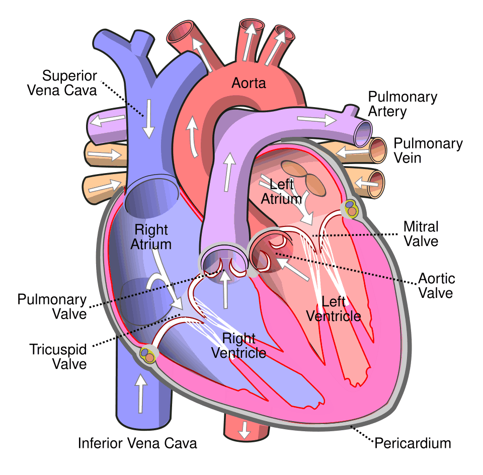

Rib cage · Lungs · Heart
Where is the heart?
The heart sits in the middle of the chest, between the two lungs. The rib cage protects them all.
- 12 pairs of ribs, the sternum in front and 12 thoracic vertebrae at the back.
- The sternum has 3 parts: manubrium, body and xiphoid process.
- Its job: protect the heart and lungs, and help us breathe.
Tap a rib group
- Right lung: 3 lobes (upper, middle, lower).
- Left lung: 2 lobes (upper, lower). It is smaller because the heart leans to the left.
- The left lung has a cardiac notch, a space for the heart.
- Press Breathe: the diaphragm moves down and the lungs fill with air.
- The heart lies in the middle mediastinum, the space between the two lungs.
- About two-thirds of it is on the left side of the chest.
- It is wrapped in a protective sac called the pericardium (dashed line).
- Its tip, the apex, is at the left 5th intercostal space.
Size · Shape · Parts
The outside of the heart
The heart is about the size of your fist. Click the numbers on the picture to name each part.
Front view · Patrick J. Lynch & C. Carl Jaffe, CC BY 2.5
- The apex points down and to the left.
- The base faces backwards (mostly the left atrium).
Chambers · Valves
Four chambers, four valves
The right side pumps blood to the lungs. The left side pumps blood to the body. A wall called the septum keeps the two sides apart.
The valves
| Valve | Between | Cusps |
|---|---|---|
| Tricuspid | Right atrium → right ventricle | 3 |
| Pulmonary | Right ventricle → pulmonary trunk | 3 |
| Mitral | Left atrium → left ventricle | 2 |
| Aortic | Left ventricle → aorta | 3 |
Pathway of blood
How blood flows through the heart
Blue = blood with little oxygen. Red = blood full of oxygen. Press Next to follow it step by step.

To the lungs (pulmonary circulation)
Right ventricle → lungs → left atrium
Blood picks up oxygen and gets rid of carbon dioxide.
To the body (systemic circulation)
Left ventricle → aorta → body → right atrium
Blood delivers oxygen to every organ.
Conduction system
What makes the heart beat?
Every beat starts with a small electrical signal. It travels along a special pathway and makes the heart muscle contract. The ECG records this signal.
- SA nodeThe natural pacemaker. It starts every beat.
- AV nodeHolds the signal for a moment so the ventricles can fill.
- Bundle of HisCarries the signal into the septum.
- Right & left bundle branchesRun down both sides of the septum.
- Purkinje fibresSpread the signal through the ventricles, which then contract.
One heartbeat ≈ 0.8 seconds
The cardiac cycle
Each heartbeat has two parts: systole, when the heart squeezes, and diastole, when it relaxes and fills. Watch the valves open and close.
To sum up
Summary
- WhereIn the middle of the chest, between the lungs, protected by the rib cage.
- StructureFour chambers (2 atria, 2 ventricles) and four valves.
- Blood flowBody → right heart → lungs → left heart → body.
- HeartbeatStarts at the SA node; one cycle = systole + diastole, heard as “lub-dub”.
Practical Anatomy Seminar
Thank you
Any questions?
Yousif Basil&Arwan Samir
References: Moore, Clinically Oriented Anatomy · Snell, Clinical Anatomy by Regions · Guyton & Hall, Medical Physiology. Images: P. J. Lynch & C. C. Jaffe (CC BY 2.5) · OpenStax Anatomy & Physiology (CC BY 3.0) · Wikimedia Commons heart diagram (CC BY-SA 3.0) · H. Gray, Anatomy of the Human Body, 1918 (public domain). Chest, valve and conduction drawings and animations made for this seminar.